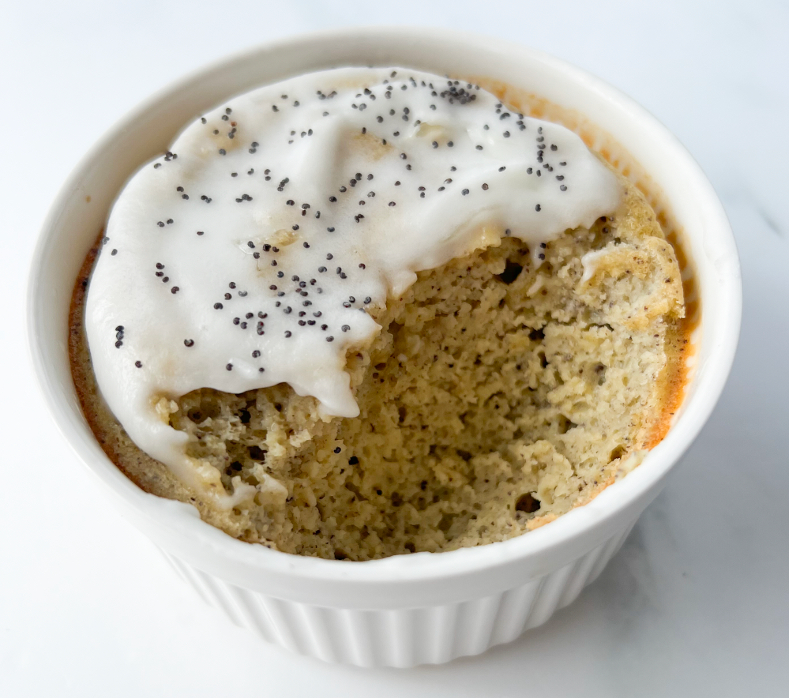

Lemon Poppyseed Baked Oatmeal

Ingredients
- 1/2 spotty banana
- 1 egg
- 1/2 cup oats
- 2 tbsp milk of choice
- 2 tbsp lemon juice
- 1 tsp lemon zest
- pinch sea salt
- 1/4 tsp baking soda
- 1/2 tsp poppyseeds
For the lemon icing
- 1 tbsp powdered sugar (or sugar-free replacement)
- 1/2 tsp lemon juice
Instructions
- Preheat oven to 350 and lightly oil an oven-safe baking dish.
-
Add all ingredients to your blender and blend until fully combined.
-
Pour batter into baking dish and bake 20-25 minutes. Let cool
completely.
-
Mix together icing ingredients and spread over baked oatmeal. Enjoy!
Full reference here